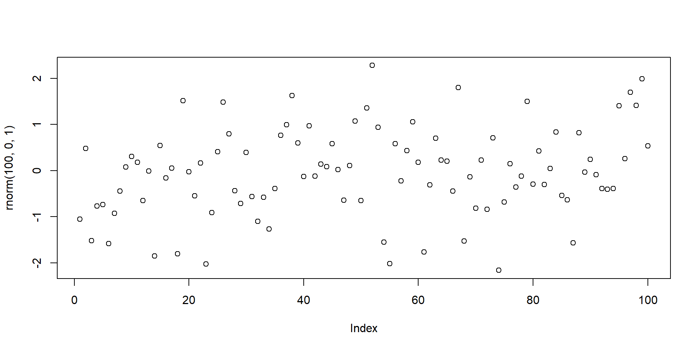

Securing the connection between your computer and GitHub
You need to identify yourself and your machine to GitHub before interacting with GitHub repositories.
SSH keys are a common way to manifest your identification to GitHub
Important
SSH keys come in pairs, a public key that gets shared with services like GitHub, and a private key that is stored only on your computer. If the keys match, you’re granted access. Setting up the SSH key has to be executed once per GitHub account and for each computer you will use to connect to GitHub.
Checking for existing SSH key pair
Step 1: Before generating a new SSH key pair, check for existing key in your .ssh directory.
Windows: Open Git Bash (start menu > Git Bash)
MacOS: Open Terminal App
Linux: Open your distribution’s (or any other) terminal emulator
Checking for existing SSH key pair
Step 2: Enter the following command to list the content of the ssh directory:
ls ~/.ssh
Checking for existing SSH key pair
Step 3: If there are existing ssh keys, they are named one of the following:
id_rsa.pubid_ecdsa.pubid_ed25519.pub
Important
If you already have an SSH key pair, you can skip the section on how to generate a new SSH key pair. If you don’t have an existing public and private key pair (which is to be expected!), or if you receive an error that ~/.ssh doesn’t exist, that this file location doesn’t exist, or that you can’t access this folder, go ahead and generate a new SSH key pair.
Generating a new SSH key pair
Step 1: In the command line, type the following (replacing the email here with your own email) to create a new SSH key pair with your email as a label:
ssh-keygen -t ed25519 -C "your_email@email.com"
Tip
Pay close attention to spacing and capital letters while typing.
Generating a new SSH key pair
Step 2: When prompted to Enter a file in which to save key, press ENTER to accept the default file location. That should give you this prompt:
Generating public/private ed25519 key pair. Enter file in which to save the key (/Users/username/.ssh/id_ed25519):
Generating a new SSH key pair
Step 3: Next, you are asked to provide a passphrase in the terminal. Protecting your keys with a password is optional but highly recommended. Press ENTER after confirming your password.
Enter passphrase (empty for no passphrase): Enter same passphrase again:
Warning
When you type passwords in the command line, nothing is displayed, you are however still typing in the background. This is normal behaviour by the command line and nothing to be concerned about.
Generating a new SSH key pair
Step 4: When the key generation is complete, you should see the confirmation below.
Your identification has been saved in /Users/username/.ssh/id_ed25519.Your public key has been saved in /Users/username/.ssh/id_ed25519.pub.The key fingerprint is:SHA256:6nr/zo0g7Bz7WMRwy34maBhQy1UZyX47gT+egRdlIhs your_email@email.comThe key's randomart image is:+--[ED25519 256]--+| .o++ || o oF . o || . o+ =.+. || . + += . || . +S++ || . ..oB= || . ++*=. || o.==* o || .o.o+** . |+----[SHA256]-----+
Generating a new SSH key pair
Note
Done! You have successfully generated your public SSH key pair.
Adding the SSH key to GitHub account
Step 1: Tell GitHub about your new public key. In the terminal, please hit ENTER after typing:
cat ~/.ssh/id_ed25519.pub
Important
Be careful: do not copy the content of your private key, but your public key. Your public key ends with .pub.
Adding the SSH key to GitHub account
Step 2: The output should be something like below. This is the output that needs to be copied in its entirety.
# The output looks like this. The characters after ssh-ed25519 will be different for you, however.ssh-ed25519 AAAAC3NzaC1lZDI1NTE5AAAAIFEKiimOpcayfHhlbjmnIBAUX74FY/o20k9yFA16XOLm your_email@email.com
Important
Copy the contents of the output to your clipboard.
Navigate to your account settings by clicking on your profile photo (top right) and selecting Settings
Click on SSH and GPG keys (left sidebar)
Click on the green button ‘New SSH key’ or ‘Add SSH key’.
Adding the SSH key to GitHub account
Adding the SSH key to GitHub account
Step 4:
In the “Title” field, add a descriptive label for the new key, e.g. something that would identify the device you just connected
For example, if you’re using a personal laptop, you might call this key “Personal MacBook Air”.
Paste the contents of your clipboard into the Key text box
Hit the green ‘Add key’ button to save. Enter your GitHub password if prompted.
Adding the SSH key to GitHub account
Step 4: continued
Adding the SSH key to ssh-agent
Managing your ssh keys is done via the ssh-agent software.
Note
Depending on your system, the following might not be necessary. On most GNU/Linux distributions, your key will be automatically added to the ssh-agent after the first time you enter it. If you keep getting asked for your key each time you want to clone or push to a GitHub repository, you can follow the instructions on the next slides.
Adding the SSH key to ssh-agent
Step 1: In the command line, start the ssh-agent with this command:
eval "$(ssh-agent -s)"
This should give you this:
Agent pid 59566
Adding the SSH key to ssh-agent
Step 2: Add your SSH key to the ssh-agent by typing the entirety of this command:
ssh-add ~/.ssh/id_ed25519
Testing the GitHub connection
Step 1: “Ask” GitHub at the command line if our connection is acceptable with the following code:
ssh -T git@github.com
Testing the GitHub connection
Step 2: When asked about fingerprinting, type yes, then press ENTER to receive this output:
> Hi USERNAME! You've successfully authenticated, but GitHub does not> provide shell access.
Important
This is it! You have set up a new SSH key pair and successfully let GitHub know your identity to connect your computer to your GitHub account. These steps will only have to be repeated when you change computers. Let the fun begin!
RECAP: Setting up Git
What have we done so far?
Installed Git ✅
Configured Git ✅
Secureed a connection between PC and GitHub via SSH key pair ✅
Added SSH key pair to GitHub account ✅
Tested the connection between your machine and GitHub ✅
Important
Your Git and GitHub setup is now secure and ready to use!
Pre-break survey
Brief check-in: Your Turn!
Select the prebreak survey option!
What is the main purpose of using Git in a project?
To edit code directly on GitHub
To automatically test and debug programs
To track changes and collaborate on code with version control
To back up files to the cloud without version history
Why do we add an SSH key to our GitHub account when setting up Git?
To store our Git username and password on the computer
To allow our computer to connect securely to GitHub without entering a password each time
To make Git automatically commit our changes
To enable GitHub to edit our files directly on our computer
Break! 15 minutes
Post-break survey discussion
What do we see in the results?
RStudio Project: What is it?
Local folder used to organize your work within a self-contained R storage.
Contains all files related to project: R scripts, source files, location of the R working directory, RStudio workspace …
Includes shortcut to open the project directly in RStudio
Creating an RStudio Project
Step 1: Create a new project in RStudio as follows: File -> New Project -> New Directory
Creating an RStudio Project
Step 2: In the New Project Wizard screen, click on New project:
Creating an RStudio Project
Step 3: Give your project a name (e.g.’my_first_test_repo’) and ensure that Create a git repository is ticked. Next, click on Create Project.
Note
RStudio will create a new folder containing an empty project and set R’s working directory to within it.
Creating an RStudio Project: Important files
Two files are created in the otherwise empty project:
.gitignore: Specifies files that should be ignored by the version control system (e.g. sensible data files that should not be made public, or documentation that you don’t need version controlled).
my_first_test_repo.Rproj: Configuration information for the RStudio project.
Setting up a small practice project
We will now generate a small project to practice version control on.
Step 1: Download dataset to practice analyses on.
Setting up a small practice project
Step 2: Create a new R script File -> New File -> R script and save it as myscript.R. Then add the code below to your R script.
Step 3: Run the code and check your directory. It should now contain four files:
Getting your project under version control
Step 1: Find the git version control pane in the top right corner of RStudio in the Git tab.
Getting your project under version control
Step 2: Hover the mouse pointer over the yellow ? marks in GitHub, you’ll see a tooltip telling us that the file is untracked. This means that git is not tracking versions of this file. Tick staged for each file.
Getting your project under version control
Step 3: Our staged files are now ready for the first commit. Click on the commit button.
Getting your project under version control
Step 4: Specify a commit message, which is a brief description of the changes you made. For now, we will add the commit message First commit. Then click on Commit.
Getting your project under version control
Step 5: Check the message from git and then click on close - finished!
Making changes
Now we want to make some actual changes to practise using Git and to show how Git handles modifications of files.
Step 1: Add the following code to your existing R script:
# some guesses for the parameters.p1 = 1p2 = 0.2# do the fitfit = nls(ydata ~ p1*cos(p2*xdata) + p2*sin(p1*xdata), data = mydata, start = list(p1=p1,p2=p2))#Plot the fitted linenew = data.frame(xdata = seq(min(mydata$xdata),max(mydata$xdata),len=200))lines(new$xdata,predict(fit,newdata=new))
Making changes
Step 2: Change the command that plots our data in this file.
Change the line
plot(mydata$xdata,mydata$ydata)
to
plot(mydata$xdata,mydata$ydata,col='red')
and run this code.
Making changes: Optional Exercise
Step 3(optional): Create another R file with File -> New File -> R script. Save as myscript_version2.R. Then add and run the code below in the new R script:
#Simulate some dataplot(rnorm(100,0,1))

Committing changes
Click on the git tab in the top right corner. Two files appeared, the script we modified and the new script.
Step 1: Click on the staged box to stage changes for the first script.
Committing changes
Step 2: Click on Diff for a reminder summary of what changed. Then add a commit message and click commit.
Important
Lines that have been added are green. Lines that have been removed are red.
Practical exercise 1
Note
By default, the history search feature will show all files added, changed, or deleted for each commit. This can be extremely useful for finding bugs or looking back to how your project looked a few months ago. However, it is often more practical to review the changes made to a single file over time; this enables, for example, clear tracking of the evolution of data cleaning and analysis steps in your project.
Connecting the local repository to GitHub
The project is now under version control. Time to create a new GitHub repository and upload to GitHub!
Step 1: Log into GitHub and go to your profile page. On the repositories tab, click New.
Connecting the local repository to GitHub
Step 2: Give the repository a name and click Create Repository.
Connecting the local repository to GitHub
Step 3: Configure the repository in the Quick Setup screen. Select the SSH tab and make sure the url shown in the blue box should start with git@github.com.
Connecting the local repository to GitHub
Step 4: Copy the commands from the or push an existing repository from the command line to your clipboard with the GitHub copy button.
Connecting the local repository to GitHub
Step 5: Go to RStudio, navigate to the git tab and Click on More > New Terminal.
Connecting the local repository to GitHub
Step 6: Paste the git commands from your clipboard into the terminal and press enter to execute them. Insert your SSH key password if prompted or type
yes
when a sentence about continuing to connect appears in the terminal.
Connecting the local repository to GitHub
Step 7: Check that your local repository with your RStudio Project appears on your GitHub profile (please refresh the page once).
Note
You only need to upload your local repository once to GitHub. In the subsequent section, we explain how to sync (or push) your local changes in your RStudio project with the remote repository you just created on GitHub.
Making changes: Adding a README to your RStudio Project
Imagine that as a follow-up step, we want to add a README file to the RStudio project folder.
Note
A README file is a short document that explains what your R project is about and can be viewed as a sort of Welcome Guide. It usually includes things like:
What the project does
Who made it
What files or data are included
How to use or run the code
Any special setup or packages needed
Adding a README to your RStudio Project
Step 1: In RStudio, click on File > New File > Text File. Add the following text to the file and save it as Readme.md:
# My Example RepoThis repo is used to demonstrate GitHub to users of R and R Studio.
Adding a README to your RStudio Project
Step 2: In the git tab, you should see the new Readme.md file (and only that one!). Stage the file and press commit.
Adding a README to your RStudio Project
Step 3: Add a new commit message and press Commit in the bottom right corner.
Adding a README to your RStudio Project
Step 4: Push the changes to upload to GitHub by pressing the button in the top right corner with the green arrow pointing upwards.
When to stage and commit?
Important
Great question! The point of version control is to have a track record of changes and that you can undo/redo any changes at any time. Therefore, you should stage and commit your changes to version control whenever you finished a clear, logical “unit”, e.g.:
Added a code chuck or function
Cleaned your dataset
Created a new figure
Updated a paragraph
RECAP: Version control in RStudio with Git
What have we done so far?
Created an RStudio Project in a local repository ✅
Created files for the project (code, downloaded data etc.) ✅
Added version control to our project in the local repository ✅
Made changes and commit these changes locally ✅
Connected the local repository with a remote repository ✅
Synchronised ( = pushed ) the local changes to the remote repository ✅
OVERVIEW: The Git/GitHub workflow
Once you have brought your local repository under version control and connected the remote repository, you will find yourself repeating the same steps over and over:
Important
Make changes locally
Stage changes locally
Commit changes locally with a commit message
Push local changes to the remote repository on GitHub
Why is version control important and useful?
Why is version control important and useful?
Some thoughts …
Tracks every change in your R project and acts as a “time machine” for your code/files
Makes mistakes easy to fix because you can revert to earlier versions anytime
Improves reproducibility by seeing what changed, when, and why
Provides a backup via GitHub for easy sharing and access anywhere
Assignment: Practising the workflow
This is a dataset containing the number of athletes that participated in the Summer Olympics over the years.
Tip
When creating the new RStudio project, make sure to check “Create a git repository”.
Assignment: Practising the workflow
(cont.)
Tip
For the plot, use geom_line() to plot the number of athletes at the Summer Olympics over the years.
Take-home message
What are you taking away from today?
Tip with Title
It is all about practise until you develop a routine - keep practising!
To conclude: Survey time!
Select the finishing survey option!
Which of the following concepts or skills do you now feel more confident about in relation to version control? (Select all that apply)
Git
GitHub
Repositories
RStudio Project
I am (still) not sure about any of these concepts.
On a scale of 1 to 5, how comfortable are you with using Git for version control? (1 = Not comfortable at all, 5 = Very comfortable)
1
2
3
4
5
Discussion of survey results
What do we see in the results and how do they compare to the previous ratings?
Help and support
If you get stuck, there is plently of help available:
Pedagogical add-on tools for instructors - UNFINISHED
This section is dedicated to ideas on how to incorporate pedagogical tools into teaching for this specific submodule topic. This could mean:
Information about the scientific evidence on the theory of the pedagogical add-on tool and the evidence for its efficacy.
Discussion/reflection on how tools can be incorporated into the teaching for this particular content.
Extra exercises for faster students.
Additional literature for instructors - UNFINISHED
References for content
References for pedagogical add-on tools
Other resources (videos etc.)
Contribution Statement - UNFINISHED
Possible roles using the CRediT contribition system or the Zenodo Contribution System:
Name main content creator: Conceptualization, Software, Writing - Original Draft, Visualization. Sara Lil Middleton: Writing - Review & Editing, Supervision. Sarah von Grebmer zu Wolfsthurn: Conceptualisation, Writing - Review & Editing, Supervision, Project Administration, Validation.

 0000-0002-6413-3895)
0000-0002-6413-3895)